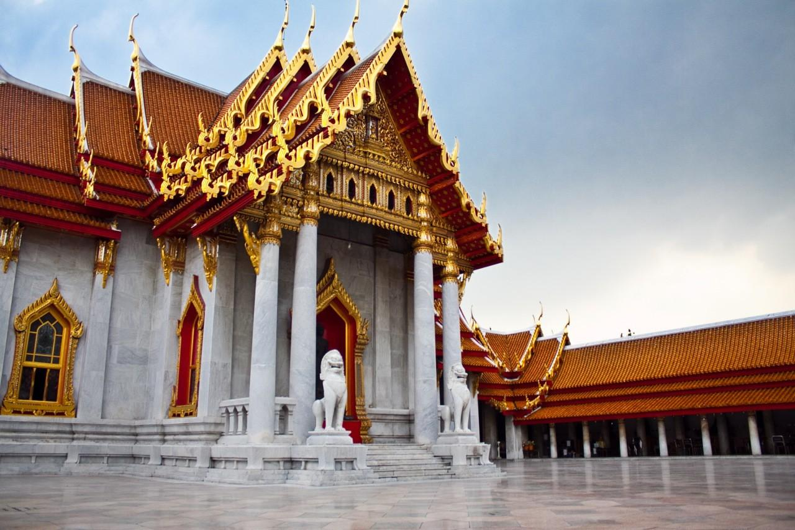
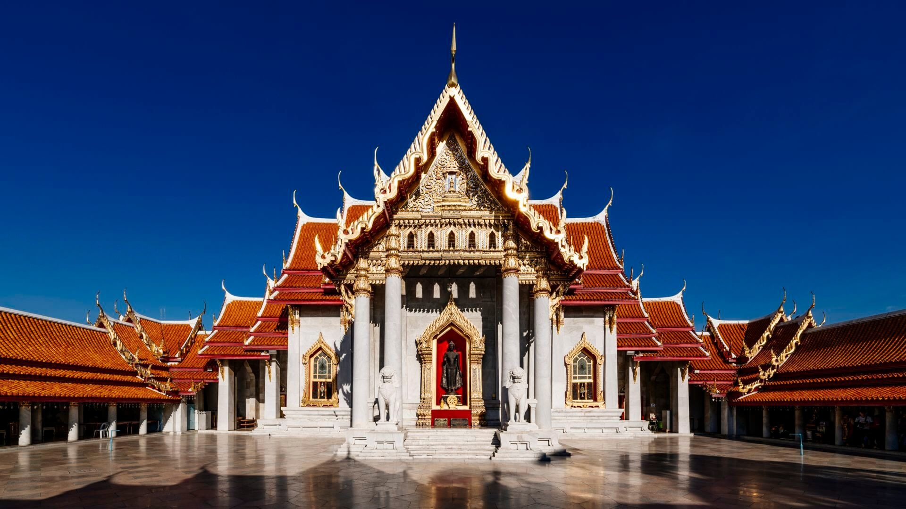
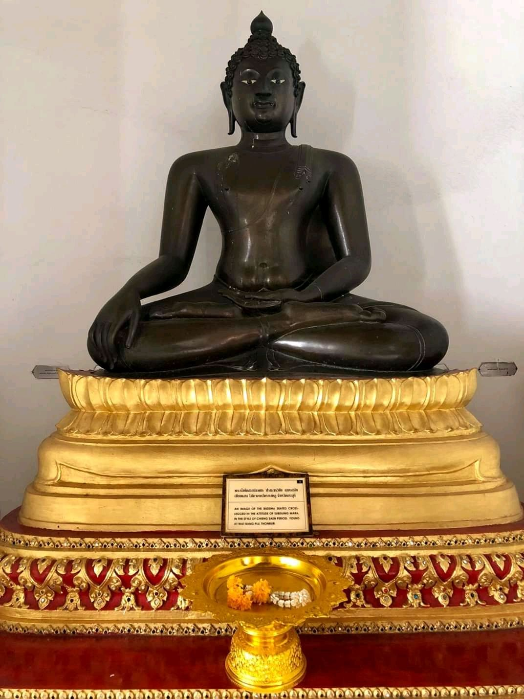
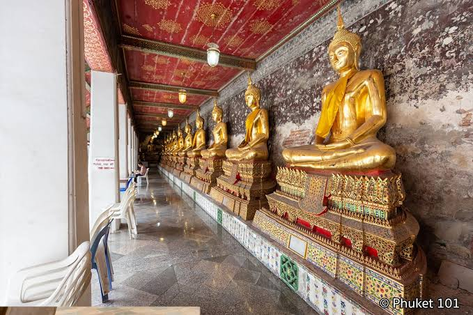
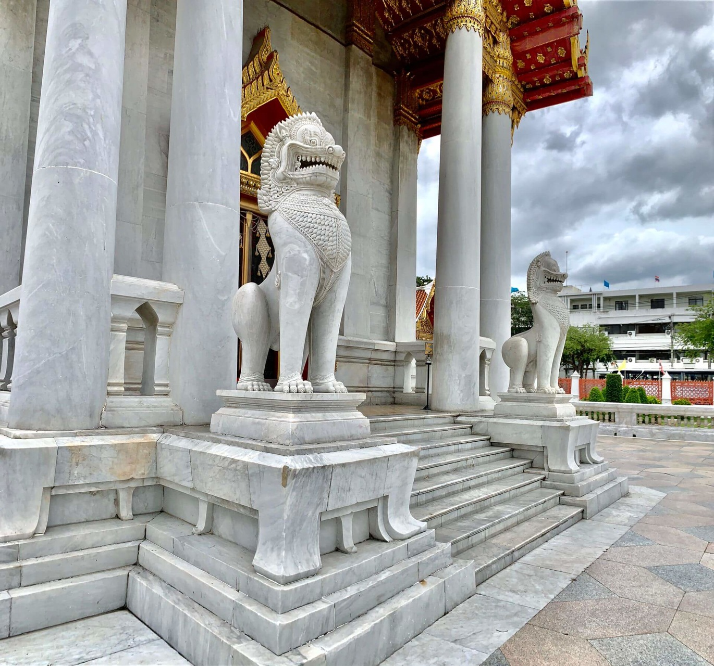
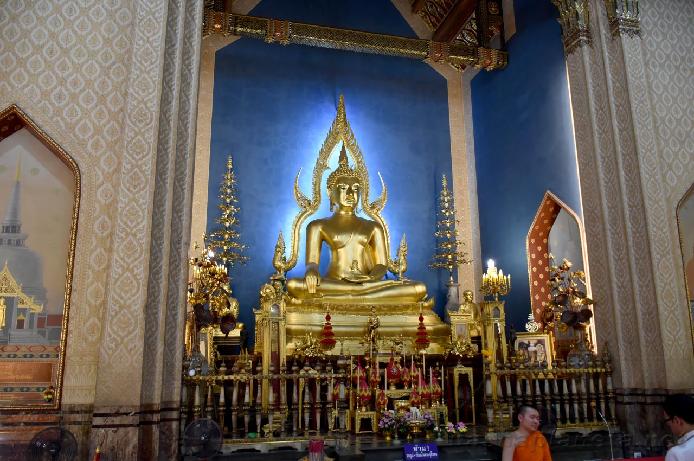
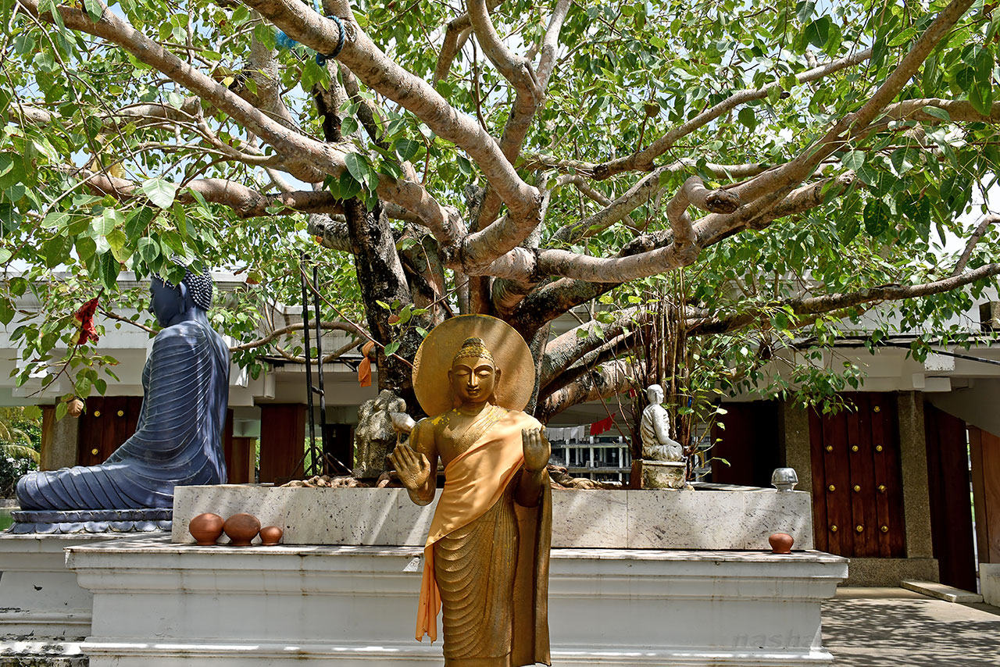
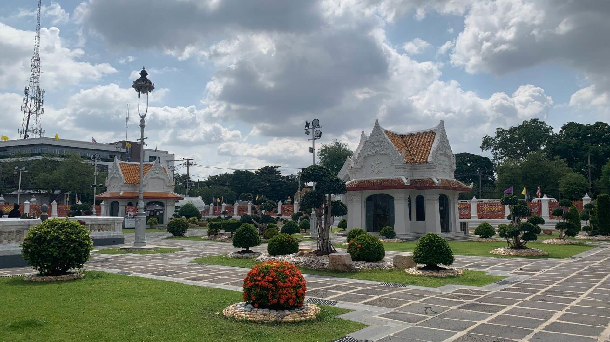

Travel Diary |
Главная | Страны | Советы | Места |

Ват Бенчамабопхит, также известный как Мраморный храм, — один из самых узнаваемых храмов Бангкока. Его главная особенность — белоснежный мрамор, использованный при строительстве главного храмового здания.
Храм был построен во время правления короля Рамы V и сочетает традиционную тайскую архитектуру с необычными европейскими элементами. Благодаря белому итальянскому мрамору храм особенно красиво выглядит при солнечном свете. Внутри находится знаменитая статуя Будды, а вокруг главного здания расположена галерея с большим количеством изображений Будды различных исторических периодов и художественных стилей.
Мраморный храм находится в районе Dusit, в северной части исторического центра Бангкока.
Адрес: 69 Rama V Road, Dusit, Bangkok 10300, Thailand. Храм расположен недалеко от Dusit Palace и королевского района Дусит. Это довольно спокойная часть города, которая сильно отличается от оживлённых улиц Чайна-тауна или туристического района Khao San Road.
Для иностранных туристов вход стоит около 50 бат.
Для граждан Таиланда посещение храма бесплатное. Стоимость и правила посещения могут изменяться, поэтому перед поездкой лучше проверить актуальную информацию.
Мраморный храм открыт ежедневно примерно с 08:30 до 17:30.
Лучше приезжать утром или ближе к вечеру. В это время обычно комфортнее гулять по территории, а мягкий солнечный свет особенно хорошо подчёркивает белый мрамор здания.
До Мраморного храма можно добраться на городском автобусе из центральных районов Бангкока. Это один из вариантов для тех, кто хочет воспользоваться общественным транспортом.
Самый простой вариант для туристов — воспользоваться такси или приложением Grab. Мраморный храм находится немного в стороне от основных линий BTS и MRT, поэтому поездка на автомобиле может оказаться удобнее, особенно если вы едете сюда прямо из другой части Бангкока.
До района Дусит можно также добраться по каналам Бангкока, однако для большинства туристов такой вариант будет менее удобным. Если вы уже пользуетесь лодками по каналу Saen Saep, можно продолжить маршрут пешком или на такси.
Мраморный храм сравнительно небольшой по сравнению с некоторыми другими храмовыми комплексами Бангкока, однако его архитектура и оформление делают его одним из самых интересных мест города.

Главное здание Wat Benchamabophit полностью облицовано белым мрамором, который был привезён из Италии.
Фасад украшен традиционными тайскими элементами, высокими крышами и декоративными деталями. При этом в архитектуре заметно европейское влияние, что делает храм необычным среди других храмов Бангкока.
Именно белоснежный фасад сделал Ват Бенчамабопхит одним из самых фотографируемых храмов города.

В главном храмовом здании находится большая статуя Будды, перед которой посетители могут остановиться для молитвы и поклонения.
За статуей расположены декоративные элементы и изображения, которые подчёркивают глубину главного зала.
Интерьер храма заметно отличается от его белого внешнего фасада и выглядит более тёмным и насыщенным.

Вокруг главного здания находится галерея с 52 изображениями Будды.
Статуи выполнены в различных художественных стилях и относятся к разным периодам тайской истории. Здесь можно увидеть, насколько сильно менялось изображение Будды в искусстве разных эпох.
Галерея является одной из главных особенностей Ват Бенчамабопхит и интересна не только с религиозной, но и с исторической точки зрения.
 |
 |
Мрамор является главной архитектурной особенностью храма.
Белые стены, колонны и декоративные элементы особенно красиво смотрятся при ярком солнечном свете. На фоне зелени территории храм выглядит практически полностью белым.
Именно сочетание белого мрамора, красной черепичной крыши и золотых деталей делает Ват Бенчамабопхит легко узнаваемым.

На территории храма находятся небольшие здания, деревья, пруды и места для отдыха.
В отличие от многих популярных достопримечательностей центрального Бангкока, здесь обычно ощущается более спокойная атмосфера.
Можно не спеша прогуляться по территории и рассмотреть архитектуру храма с разных сторон.

Одно из самых известных мест для фотографий находится возле небольшого водоёма на территории храма.
В спокойной воде отражается белое здание Ват Бенчамабопхит, поэтому здесь можно сделать особенно красивые фотографии.
Лучше всего приходить утром или во второй половине дня, когда свет мягче и отражение выглядит наиболее эффектно.
Мраморный храм расположен в районе Дусит, где находится несколько важных исторических и архитектурных достопримечательностей Бангкока.
Dusit Palace — большой королевский комплекс, расположенный недалеко от Мраморного храма. Район вокруг дворца связан с историей тайской монархии и эпохой правления Рамы V.
Vimanmek Mansion — историческое здание в районе Дусит, построенное из тикового дерева. Оно связано с королём Рамой V и является частью исторического наследия района.
Парк Люмпини находится южнее Мраморного храма. Если хочется после посещения храма сменить архитектуру на зелёную зону, можно отправиться туда на такси или общественном транспорте.
Khao San Road находится относительно недалеко от Ват Бенчамабопхит. Эти места удобно объединить в один маршрут по исторической части Бангкока.
Одевайтесь соответствующе. Это действующий буддийский храм, поэтому при посещении стоит закрывать плечи и колени.
Снимайте обувь там, где это требуется. Внутри храмовых помещений могут действовать отдельные правила для посетителей.
Не шумите внутри храма. Помимо туристической достопримечательности, Ват Бенчамабопхит является действующим религиозным местом.
Не торопитесь. Сам храм не огромный, поэтому его можно спокойно осмотреть примерно за час.
Обратите внимание на архитектуру. Ват Бенчамабопхит интересен не только как храм, но и как пример сочетания тайской и европейской архитектуры.
Лучше приезжать утром. В это время обычно меньше людей и мягче освещение для фотографий.
Не заходите за ограждения. Некоторые части территории предназначены только для монахов или служебного использования.
На посещение Ват Бенчамабопхит обычно достаточно одного-двух часов. Лучше всего совместить его с другими достопримечательностями района Дусит.
Например:
Если хочется увидеть храм в наиболее красивом свете, можно приехать утром, а затем продолжить прогулку по району Дусит.
Мраморный храм — одно из самых красивых и необычных храмовых сооружений Бангкока. Его главная особенность — белый итальянский мрамор, который сочетается с традиционной тайской архитектурой, красными крышами и золотыми декоративными элементами. Внутри находится статуя Будды, а вокруг главного здания — галерея с 52 изображениями Будды различных стилей и исторических периодов. Если Ват Арун впечатляет своей высотой и расположением у реки, а Золотая гора позволяет увидеть старый Бангкок с высоты, то Ват Бенчамабопхит привлекает прежде всего своей архитектурой, белым мрамором и спокойной атмосферой. Лучше всего посетить его утром, когда территория ещё не переполнена туристами и солнечный свет красиво отражается от белого мрамора.